线性代数在现代数学与科学计算中起着十分基础的作用.按照计算的目的与用途,可以分为数值线性代数与精确线性代数.
数值线性代数服务于工程计算,运用数值方法主要求解三大类问题:线性方程组,最小二乘问题与特征值问题.所谓数值方法,是指由于工程计算中多不需要严格解,而只要依据计算的需要,实施精确到一定程度的快速计算即可,因而计算结果往往并非严格解,常常有一定的误差,称为数值解.由于这一特点,在进行算法设计时,往往不需考虑算法能否"真正地"严格求解,即使对一些有严格算法的问题 (如线性方程组)也可以考虑通过迭代法"逼近"严格解到一定精度.而在评价一个算法的优劣时,最重要的则是如下两条:
- 这一算法是否稳定?即,能否在全部或绝大部分情况下得到我们所需要的精度?与数值线性代数有关的算法稳定性分析的基本概念,我们会在"数值型算法分析基础"一节中简单介绍.
- 算法效率如何?即,能否在较短时间内计算出我们所需要的结果?在数值算法分析中,常用flop (floating point operation,浮点运算),即完成该算法所需进行的浮点运算次数来表征算法效率.由于通常计算机进行浮点数加减法的速度要快于浮点数乘除法,故在数值线性代数部分中我们以flop只表示浮点除乘除法的次数.例如,矩阵阶数为
 时,Gauss消元法求解线性方程组需要
时,Gauss消元法求解线性方程组需要 次浮点数乘法(flop),其中
次浮点数乘法(flop),其中 表示忽略了一个渐近的常数因子,即在趋于无穷大时,flop数与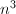同阶.
表示忽略了一个渐近的常数因子,即在趋于无穷大时,flop数与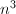同阶.
本章将介绍数值线性代数的如下基本问题:
- 一般线性代数与矩阵分析的一些基本概念.
- 数值型算法分析基础.我们将讨论数值运算的误差与稳定性的基本概念.
- 矩阵乘法的快速算法.由于矩阵乘法构成几乎所有线性代数算法的基础,因此对它进行加速是很重要的.
 线性代数与矩阵分析的基本概念
线性代数与矩阵分析的基本概念
我们假定读者已经熟悉矩阵的概念与基本运算,以及线性空间的基本概念,这些内容都可以参考一般线性代数的教材,如[1].这里我们将一些今后常用的概念和记号交代一下.
矩阵与线性空间
在数值分析中,我们总假定线性空间的基域是实数域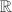或复数域 .在如下的介绍中,我们如无特殊说明,都只在上考虑,但所有定义都容易推广到上.
.在如下的介绍中,我们如无特殊说明,都只在上考虑,但所有定义都容易推广到上.
我们通常将矩阵用大写拉丁字母或希腊字母表示,向量则以小写字母表示.如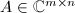,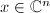.用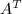表示矩阵的转置,即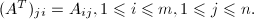用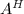表示复矩阵的共轭转置 (Hermite转置)，即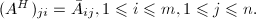
设 是一个线性空间,
是一个线性空间, 是中的一个向量组,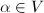称为的线性组合 (或由线性表出,线性生成)是指
是中的一个向量组,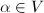称为的线性组合 (或由线性表出,线性生成)是指 可由中的某有限多个向量线性表出.若的子集合
可由中的某有限多个向量线性表出.若的子集合 在中加法和数乘运算下是上的线性空间,则称是的子空间.对的子集合,由线性生成的子空间 (即中任意有限个向量线性组合全体)称为由生成 (或张成)的子空间,记为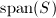.特别地,当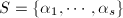为有限集时,
在中加法和数乘运算下是上的线性空间,则称是的子空间.对的子集合,由线性生成的子空间 (即中任意有限个向量线性组合全体)称为由生成 (或张成)的子空间,记为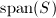.特别地,当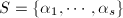为有限集时,
设矩阵, 的列空间是指由的所有列向量张成的空间,记为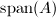,它是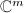中所有能表示为
的列空间是指由的所有列向量张成的空间,记为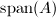,它是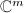中所有能表示为 形式的向量的集合,因此也称为矩阵的值域 (range).的列空间的维数称为矩阵的列秩,记作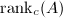. 与此相对应,的行空间是指的所有行向量张成的空间,记为
形式的向量的集合,因此也称为矩阵的值域 (range).的列空间的维数称为矩阵的列秩,记作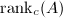. 与此相对应,的行空间是指的所有行向量张成的空间,记为 ,其维数称为的行秩,记作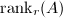.但可证明,对于任意矩阵,其行秩与列秩总是相等,通常称为矩阵的秩,记作. 矩阵的零空间 (nullspace)是指满足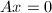的向量的集合,记作或.
,其维数称为的行秩,记作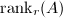.但可证明,对于任意矩阵,其行秩与列秩总是相等,通常称为矩阵的秩,记作. 矩阵的零空间 (nullspace)是指满足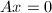的向量的集合,记作或.
有如下定理,它反映了线性映射的某种"守恒"性质:
通常我们研究的线性空间具有内积空间的结构.定义向量 的内积为可以看出,对任意非零向量
的内积为可以看出,对任意非零向量 ,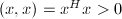0$" class="latex-inline" style="vertical-align: -5px" width="122" height="19">,称为的范数 (norm).有时也称为广义内积,其中
,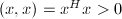0$" class="latex-inline" style="vertical-align: -5px" width="122" height="19">,称为的范数 (norm).有时也称为广义内积,其中 为Hermite矩阵,即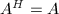.若对于任意非零向量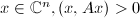0$" class="latex-inline" style="vertical-align: -5px" width="140" height="18">(或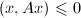),则称为正定矩阵 (或半正定矩阵).对于实向量,只要把内积定义中的共轭转置改为转置即可.特别地,若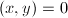,则称与
为Hermite矩阵,即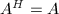.若对于任意非零向量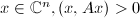0$" class="latex-inline" style="vertical-align: -5px" width="140" height="18">(或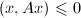),则称为正定矩阵 (或半正定矩阵).对于实向量,只要把内积定义中的共轭转置改为转置即可.特别地,若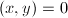,则称与 正交 (垂直),这与解析几何中向量垂直的概念是一致的.若的两个子空间
正交 (垂直),这与解析几何中向量垂直的概念是一致的.若的两个子空间 和满足对任意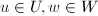,
和满足对任意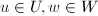, 与正交且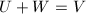,则和互称为正交补,记为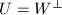.
与正交且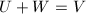,则和互称为正交补,记为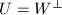.
对于矩阵,若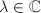及非零向量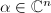使得则称 是矩阵的特征值或特征根,称为的属于的特征向量.我们注意到,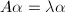相当于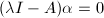有非零解,故是的特征根当且仅当
是矩阵的特征值或特征根,称为的属于的特征向量.我们注意到,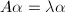相当于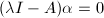有非零解,故是的特征根当且仅当 其中,多项式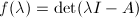称为矩阵的特征多项式.计算矩阵的特征值与特征多项式是数值线性代数中的一个重要的问题,我们将在"特征值问题"两章中讨论.
其中,多项式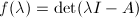称为矩阵的特征多项式.计算矩阵的特征值与特征多项式是数值线性代数中的一个重要的问题,我们将在"特征值问题"两章中讨论.
对于一个任意的矩阵,我们常可以通过变换矩阵和使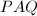成为"特定的"(其精确定义以后给出) 形式,称为矩阵的标准形 (canonical form),矩阵和称为变换矩阵.若要求和是可逆矩阵,则称之为相抵变换.特别地,如果和互为逆矩阵,则这种变换称为相似变换;如果和互为转置矩阵,则这种变换称为相合变换.如果复矩阵和满足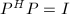以及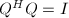,则和称为酉矩阵 (unitary matrix),相应的变换也称为酉变换;与之相对应实数域上的矩阵和如果满足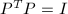以及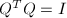,则称为正交矩阵 (orthogonal matrix),相应变换称为正交变换.容易看到,酉矩阵和正交矩阵的每一列 (行) 都是单位向量,且不同的列 (行) 之间相互正交.这几种变换是我们今后常用的变换,由它们可以给出矩阵的多种标准形式 (或分解),是多种算法的基础.
为了接下来讨论方便起见,我们先给出所谓奇异值分解 (singular value decomposition,SVD)的概念.
的秩为 ,则有酉方阵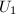和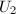使
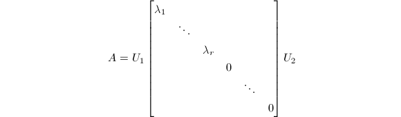其中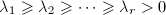0$" class="latex-inline" style="vertical-align: -3px" width="166" height="15">,而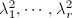为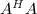的所有非零特征根.
,则有酉方阵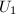和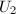使
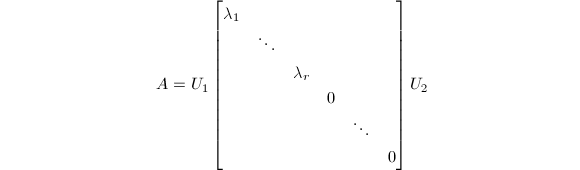其中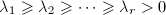0$" class="latex-inline" style="vertical-align: -3px" width="166" height="15">,而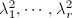为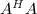的所有非零特征根.
以上定理的证明可参考[1].可对于实数域上的矩阵证明类似的奇异值分解 (或称为正交相抵标准形).
向量范数与矩阵范数
以上我们已经给出了向量范数的概念,我们进一步给出它的基本性质,其证明都很容易:
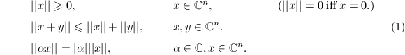事实上,以上性质是一般意义下的范数所具有的性质.据此,若是正定Hermite阵,则广义内积 同样"诱导"出向量的范数脚标用于标识不同的范数定义.除内积诱导的范数外,还有一类重要的范数经常使用,其定义如下:1.$$" class="latex-display" width="580" height="24"> 的情形特别重要:
由Hölder不等式可以证明,以上定义确实满足范数定义要求的性质(1).
同样"诱导"出向量的范数脚标用于标识不同的范数定义.除内积诱导的范数外,还有一类重要的范数经常使用,其定义如下:1.$$" class="latex-display" width="580" height="24"> 的情形特别重要:
由Hölder不等式可以证明,以上定义确实满足范数定义要求的性质(1).
若把复数域上维矩阵全体看做一个向量空间,也可以有范数的多种定义.最常用的是以下两种:
- Frobenius范数:将维矩阵全体看做向量空间,定义2-范数为这称为Frobenius范数.
- 算子范数:由
 维和维向量空间的范数诱导的算子范数定义如下:
维和维向量空间的范数诱导的算子范数定义如下: 由上确界的定义可以验证这确实满足范数的定义(1),并且对于有限维向量空间有
由上确界的定义可以验证这确实满足范数的定义(1),并且对于有限维向量空间有
向量范数与矩阵范数用于描述两个向量或矩阵的"接近"程度,在考察算法的精度时经常使用.
下面给出两个同维子空间的"距离"的定义,它用于描写这两个子空间的分离程度,在研究特征值算法的收敛速率时会用到.
设为的子空间,若矩阵满足以下条件,则称为到的正交投影映射:
- 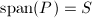.
- 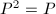.
- 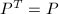.
由此定义可以得到,若 ,则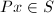,且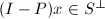.若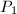和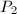均为到的正交投影,则由此得到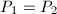,即向同一个子空间的正交投影映射是唯一的.若有一组单位正交基,则容易证明正是到的正交投影.
,则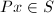,且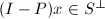.若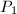和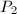均为到的正交投影,则由此得到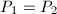,即向同一个子空间的正交投影映射是唯一的.若有一组单位正交基,则容易证明正是到的正交投影.
可以根据线性子空间与正交投影映射的一一对应关系定义两个同维子空间之间的距离.设 和
和 为的线性子空间,,为到的正交投影 ().则两线性子空间之间的距离定义为我们用来表征两个同维子空间的分离程度.注意到且该距离为0当且仅当
为的线性子空间,,为到的正交投影 ().则两线性子空间之间的距离定义为我们用来表征两个同维子空间的分离程度.注意到且该距离为0当且仅当 ,距离为1当且仅当.
,距离为1当且仅当.
特殊形式的矩阵
具有特殊结构的矩阵在数值线性代数中有着重要的地位.事实上,这是一个相当普遍的原则,即任何算法设计均应充分利用计算对象的特殊结构,而对于一般形式的矩阵则应进行约化,使之变成利于快速精确求解的矩阵形式.下面我们介绍一些今后会用到的特殊形式的矩阵.
上文中我们已经介绍了酉矩阵和Hermite矩阵.
置换矩阵是指它的每一行和每一列都只有一个元素是1,其他元素都是0.从而与的结果是分别将 的行与列做一个置换.
的行与列做一个置换.
反向置换阵定义为
它左乘向量的效果是使向量各分量的顺序颠倒过来,即
稀疏矩阵是一大类非零元素的数目远小于矩阵元素总数的矩阵.可以看出置换矩阵就是一类特殊的稀疏矩阵.今后我们主要应用的稀疏矩阵是所谓带状阵,形象地说,就是其非零元素在矩阵中排成带状.若矩阵满足j+s_1,A_{ij}=0$" class="latex-inline" style="vertical-align: -5px" width="142" height="17">,则称下带宽为.类似地,若i+s_2,A_{ij}=0$" class="latex-inline" style="vertical-align: -5px" width="142" height="17">,则称上带宽为.以下几类带状阵是值得注意的:
- 对角阵:若方阵的上下带宽均为0,则称为对角阵.直观地说,它的非零元素仅排列在对角线上.
- 双对角阵与Hessenberg阵:若方阵的上 (或下)带宽为1,则称为下 (或上)Hessenberg阵.若进一步要求上Hessenberg阵的上带宽为0,则成为下双对角阵,类似定义上双对角阵.
- 三对角阵:若方阵的上下带宽均为1,则称之为三对角阵.若它还是对称矩阵,则称为对称三对角阵.
- 块对角阵:若方阵经过合适的分块,可以看做对角阵,则称为块对角阵.
反向对称阵:若矩阵沿次对角线进行翻转后不变,则称之为反向对称阵.
我们还会用到Vandermonde阵与Toeplitz阵,将在应用时介绍.
数值型算法分析基础
由于数值计算通常是有误差的,因此对误差的分析构成算法分析的重要方面.按照误差的来源,可分为模型误差,观测误差与数值计算误差.前二者是数值分析中不考虑的.计算过程中产生的误差,主要起源与两个方面:
- 算法误差,即由于问题不可精确求解 (如高于5阶的一般矩阵的特征值问题)或算法的特殊设计 (如迭代法),算法本身就包含了误差的因素.典型的算法误差如截断误差,在运用级数对函数值进行逼近时,根据精度需要,只截断到某一项而舍去其余.(可参考"矩阵函数"一章中中"逼近算法"一节.)
- 舍入误差.这是由于计算机硬件存储数位的长度限制,在对原始数据与中间数据进行存储与计算时,可能产生误差.由于数值计算的特殊性,对这一误差来源往往要慎重考虑.为了消减舍入误差,在计算中有一些原则需要遵守,如避免相近数相减或大数与小数相加减等,以防精度严重丢失.
在一定条件下进行数值运算,对运算过程中产生误差的上界进行估计,从而评价算法的优劣,避免精度的过度损失是误差分析的目的.由于舍入误差的存在与不可避免,对于一个特定算法,我们往往要评价其结果对于中间数据的微小扰动的稳定性,这导致"条件数 (conditioning)"概念的出现.对一个数值问题,如果输入数据仅有微小扰动时,引起计算结果的相对误差很大,这就是病态 (ill-conditioned) 问题.例如,计算函数值 时,若有扰动,其相对误差为,函数值的相对误差为.相对误差比值 称为函数计算问题的条件数.自变量相对误差一般不会很大,如果条件数很大,将引起函数值相对误差很大,出现这种情况的问题就是病态问题.
时,若有扰动,其相对误差为,函数值的相对误差为.相对误差比值 称为函数计算问题的条件数.自变量相对误差一般不会很大,如果条件数很大,将引起函数值相对误差很大,出现这种情况的问题就是病态问题.
对于矩阵计算的许多算法进行误差分析,发现问题的条件数往往与以下定义的矩阵的条件数有关 (多数是与变换矩阵的条件数成正比).因此,将其单独拿出来进行一些讨论是有意义的.
 )的条件数,记为.
)的条件数,记为.
这里,"条件数"与一个矩阵相关,因而与该矩阵参与的所有数值计算均相关.如果小,称为良态的;如果大,则称为病态的.若奇异,习惯写成,以说明用奇异矩阵进行变换时,求解精度往往变得很差.
特别地,当以上定义中范数取矩阵的2-范数时,的条件数与其SVD有着重要的联系.记非奇异矩阵的SVD为则 因此2-范数意义如下这个比值可以解释为中单位球面在作用下的象的哪个超椭球的离心率.注意到,这一离心率不小于1.当且仅当为酉矩阵 (或正交矩阵) 时,达到最小值.这正是数值算法设计中往往采用酉变换 (或正交变换)的原因.
因此2-范数意义如下这个比值可以解释为中单位球面在作用下的象的哪个超椭球的离心率.注意到,这一离心率不小于1.当且仅当为酉矩阵 (或正交矩阵) 时,达到最小值.这正是数值算法设计中往往采用酉变换 (或正交变换)的原因.
根据以上关于矩阵条件数与SVD关系的讨论,我们还可以将矩阵的条件数推广到任意维数的矩阵上去.设的SVD为定义的 (广义)条件数为这样定义的条件数也能反映用作变换矩阵时数值运算的精度.
矩阵乘法
在有关矩阵的计算中,矩阵乘法具有基础性的意义.对于阶矩阵的乘法,常规算法具有的复杂度,因此加速矩阵计算是很重要的.
基于向量内积算法的Winograd加速算法
以下讨论主要来自文献[2].
 ,
, ,则内积
,则内积 可由下式给出:
可由下式给出:

将这种算法用于 的矩阵元素运算时,由于减少重复计算
的矩阵元素运算时,由于减少重复计算 ,
, ,可使计算所需的乘法次数减半,但同时使所需的加法运算增加.Winograd算法也是
,可使计算所需的乘法次数减半,但同时使所需的加法运算增加.Winograd算法也是 的算法,仅适用于小规模的矩阵求积运算,且由于该算法破坏了向量内积的整体间运算,同时增加了内存开销,因而其算法改进价值并不很大.
的算法,仅适用于小规模的矩阵求积运算,且由于该算法破坏了向量内积的整体间运算,同时增加了内存开销,因而其算法改进价值并不很大.
Strassen算法
Strassen算法(1968)是一种分治策略的算法.它以分块矩阵运算为基础.
下面介绍改进型Strassen算法,它较原始算法[3]需要更少的矩阵加法运算[4].
 为
为 进行如下递归运算:
进行如下递归运算: 为递归下界),做直接乘法.
为递归下界),做直接乘法.

以上算法的正确性直接代入即可验证.可以看出,每次递归需要7次乘法与15次加法,从而其算法复杂度是.
Strassen算法在之后有许多推广,最优渐进复杂度可以降到 .但在实际中,仅当极大时才有价值,故通常并不采用.可参考[5].
.但在实际中,仅当极大时才有价值,故通常并不采用.可参考[5].
参考文献
[1]高等代数学, 清华大学出版社, 北京, 2004.
[2]A New Algorithm for Inner Product, IEEE Trans. Comp. 17 (1968), 693-694.
[3]Gaussian Elimination is not Optimal, Numer. Math. 13 (1969), 354-356.
[4]Modern Computer Algebra, Cambridge University Press, 2002.
[5]How Can We Speed Up Matrix Multiplication?, SIAM Review 26 (1984), no.3.